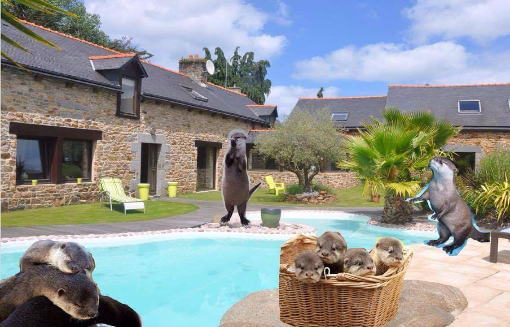
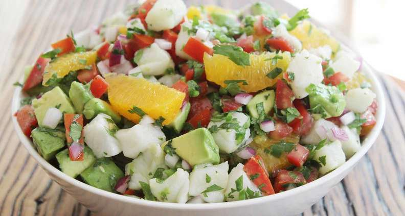

Quitterie Cadiou
Student @Le Wagon Batch#179
Hello friends! I hope you enjoy this page. Feel free to look below at my list of favourite things.
See my profileMy Favourite Things
Otters
|  |
I like otters. Otters have long, slim bodies and relatively short limbs. Their most striking anatomical features are the powerful webbed feet used to swim, and their seal-like abilities holding breath underwater. |
Hikes

|
I like hiking. The idea of taking a walk in the countryside for pleasure developed in the 18th century, and arose because of changing attitudes to the landscape and nature associated with the Romantic movement. |
Beaches

|
I like going to the beach. The development of the beach as a popular leisure resort from the mid-19th century was the first manifestation of what is now the global tourist industry. |
Ceviches
|  |
I like eating ceviche. Ceviche is a seafood dish typically made from fresh raw fish cured in citrus juices, such as lemon or lime, and spiced with ají, chili peppers or other seasonings including chopped onions, salt, and cilantro. |